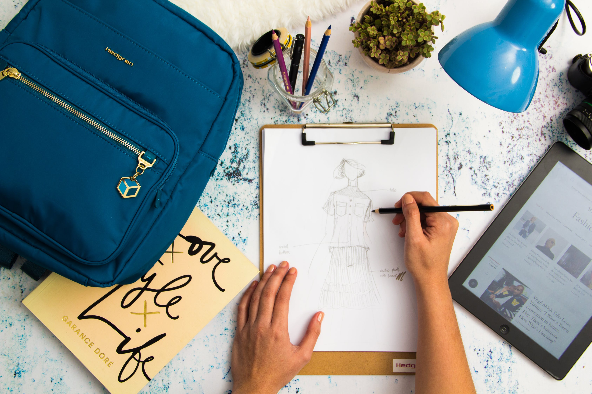
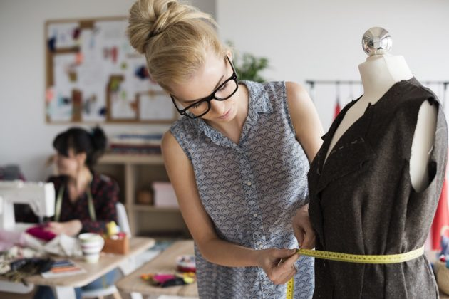
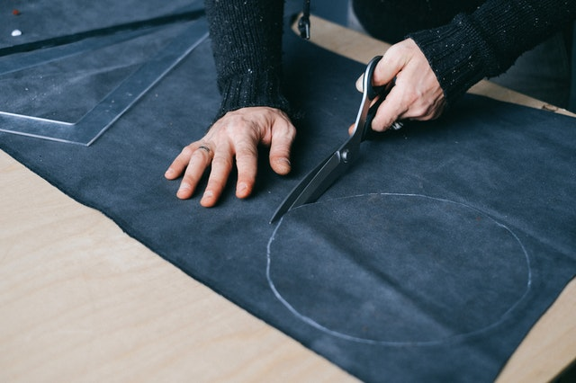
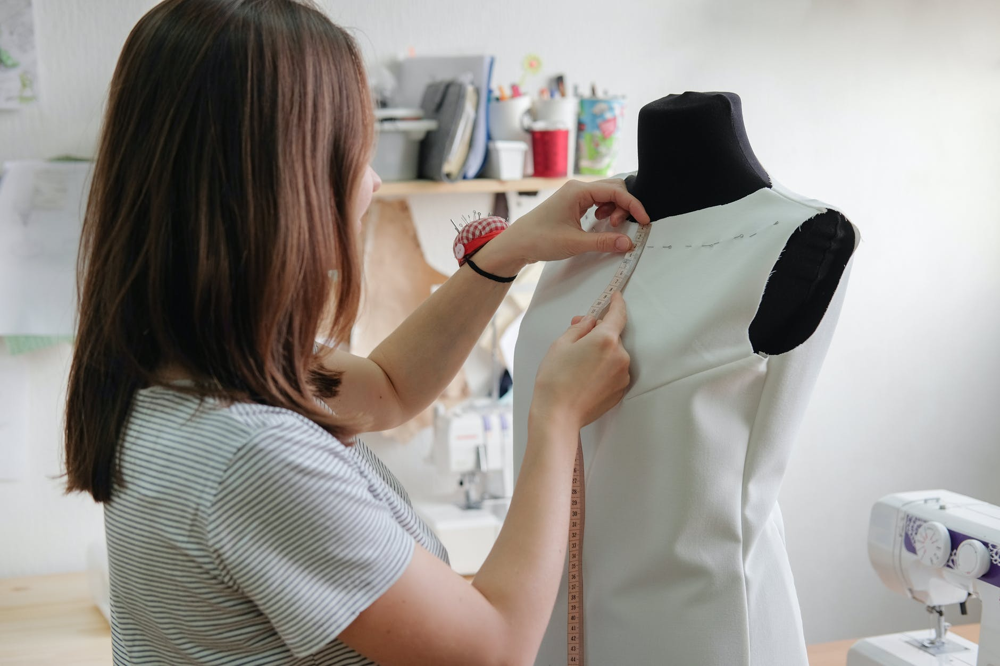
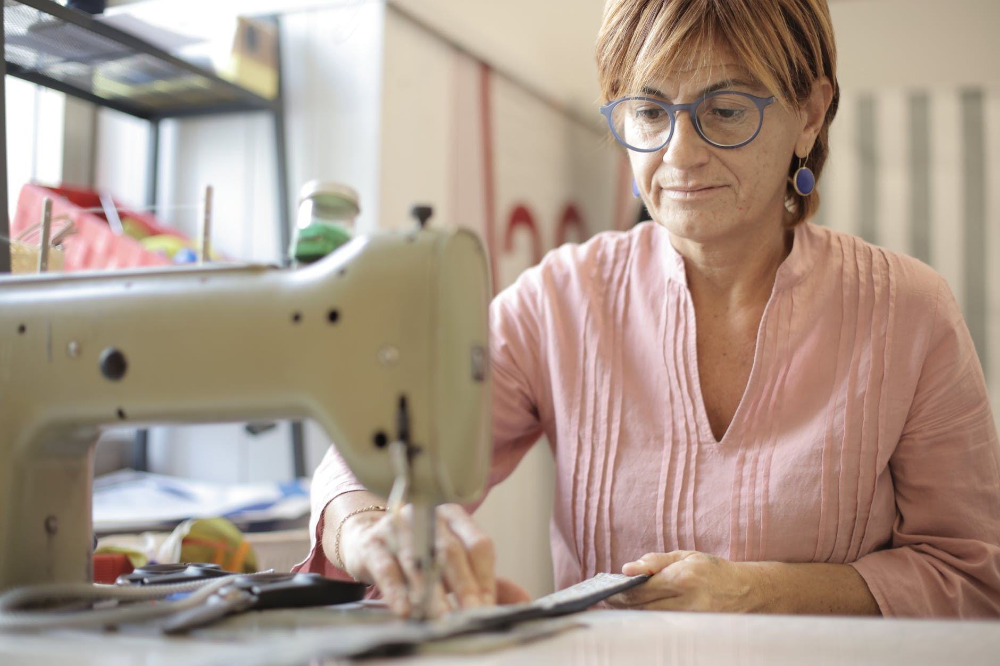
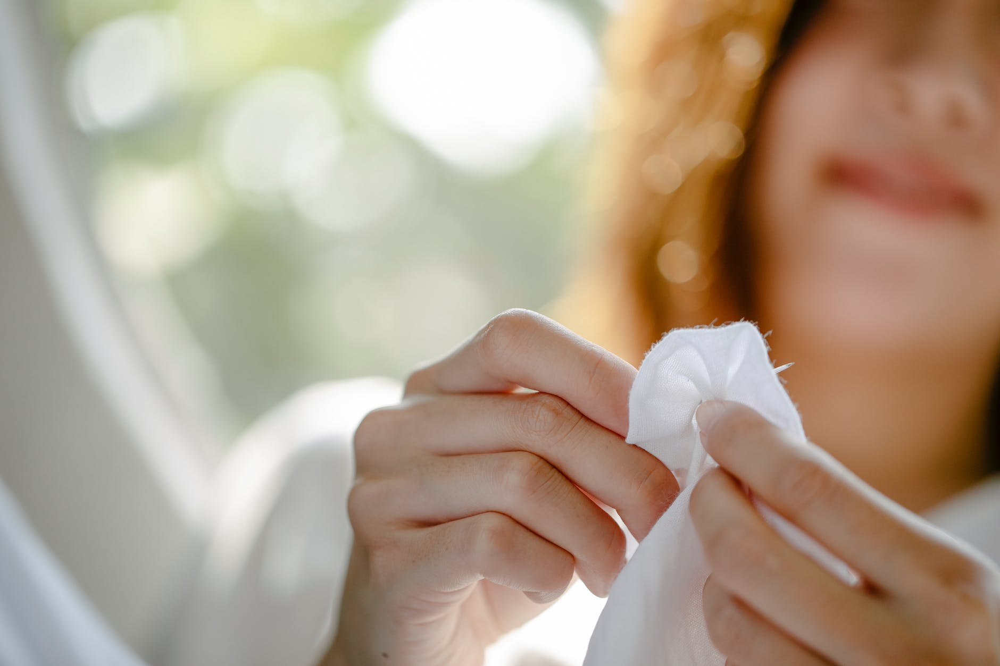

Meu hobbie
Sempre tive interesse por moda e coom 7 anos já desenhava looks de roupas e dizia que queria ser estilista. Durante a quarentena assisti um reality chamado "Next in Fashion" que despertou meu interesse em produzir roupas. Comprei uma máquina usada pela internet e produzi alguns modelos, comprei tecidos, e agora busco conhecer mais sobre esse universo e me especializar no ramo para transforma-lo em minha profissão.
Confecção - Corte e Costura

O aprendizado de corte e costura é essencial para fazer moda e a base necessária para quem deseja confeccionar as próprias peças de uso diário ou projetar coleções de vestuário. O processo de confecção de uma peça contém várias etapas:
- Desenho
- Modelação
- Corte
- Confecção do primeiro modelo
- Ajuste da modelagem
- Costura
- Acabamento

- Croqui
-
É um esboço de traços simples feito por um estilista que busca representar uma ideia de roupa, rascunho de como ficaria em uma pessoa.

- Modelista
-
É a profissão responsével pela etapa de materialização do desenho do estilista através da modelagem, verifica caimento do tecido e vestibilidade.

- Corte dos tecidos
-
Processo muito importante para garantir a qualidade da peça, é necessário conhecer as características de cada fibra, utilizar moldes e marcações e as ferramentas certas.

- Peça piloto
-
É o protótipo de um modelo que servirá como base na fabricação da roupa, primeira peça confeccionada para prova e teste da modelagem.

- Costureira
-
É a profissional responsavél por fazer a junção dos tecidos, confeccionando a roupa. Para isso podem ser usadas diferentes máquinas além da clássica costura a mão.

- Acamentos
-
É a finalização da costura da peça, os arremates dos detalhes deixando a roupa com um aspecto mais belo.
Se pensa em se jogar no mundo da moda e começar a produzir algumas peças, tem alguns materiais básicos importantíssimos. São eles:
- Fita métrica
- Giz
- Tesoura para tecido
- Alfinetes
- Variedade de fios
- Agulha de mão
- Tesoura de arremate
- Desmanchador